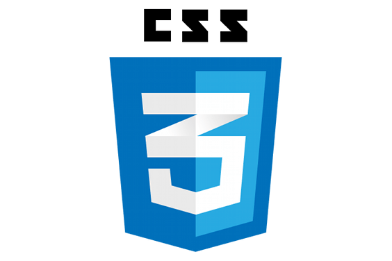
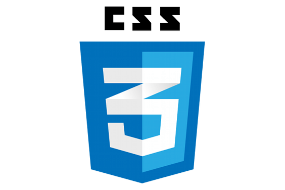

Mail: liam.rouaz@laplateforme.io
Tel: 07.58.51.48.22
Adresse: 75 rue bell de mai
Mes objectifs:
professionnelles sont centrés sur le domaine du web.
J'ai à cœur de contribuer à l'évolution constante de cet espace en concevant des solutions web innovantes.
Mon ambition est de devenir un expert du web et de créer des expériences en ligne significatives qui bénéficieront à un large public.
Experience proffesionele:
Etude/formation
 


 Telecharger le PDF
Telecharger le PDF